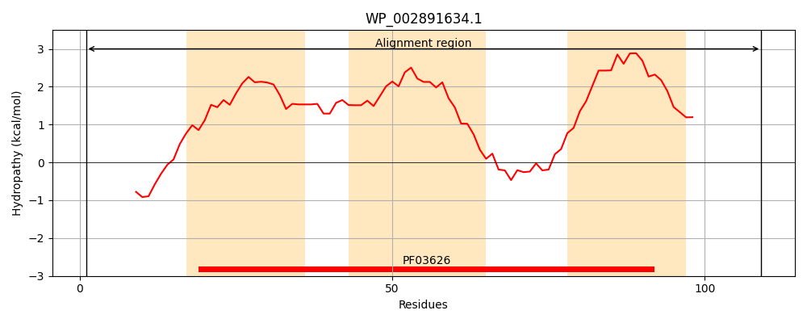
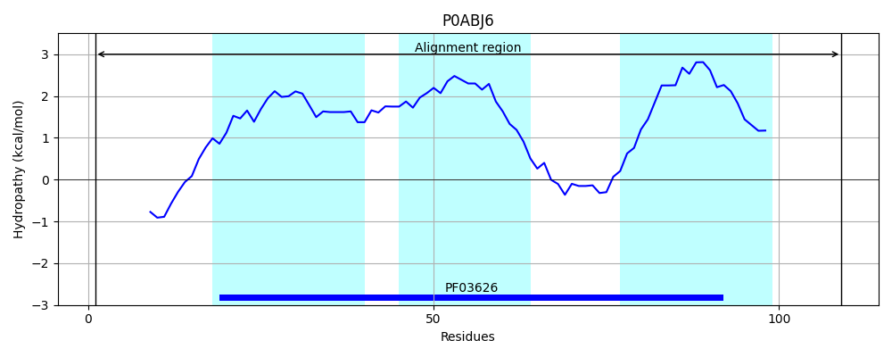
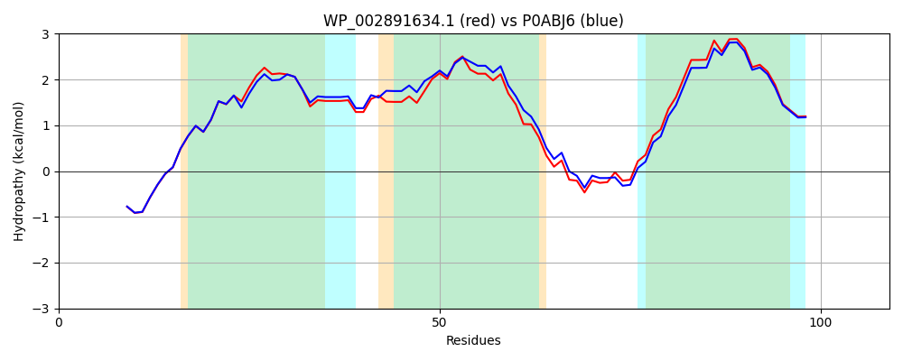

Hit Accession: P0ABJ6
Hit TCID: 3.D.4.5.1
Hit Description: gnl|BL_ORD_ID|8709 gnl|TC-DB|P0ABJ6|3.D.4.5.1 Cytochrome o ubiquinol oxidase protein CyoD OS=Escherichia coli (strain K12) GN=cyoD PE=1 SV=1
Mach Len: 109
e:0.000000
Query TMS Count : 3
Hit TMS Count: 3
TMS-Overlap Score: 2.950000
Predicted Substrates:CHEBI:5584;hydron
BLAST Alignment:
| Protein Hydropathy Plots: | |
|---|---|
|  |  |
Pairwise Alignment-Hydropathy Plot: | |
|  | |